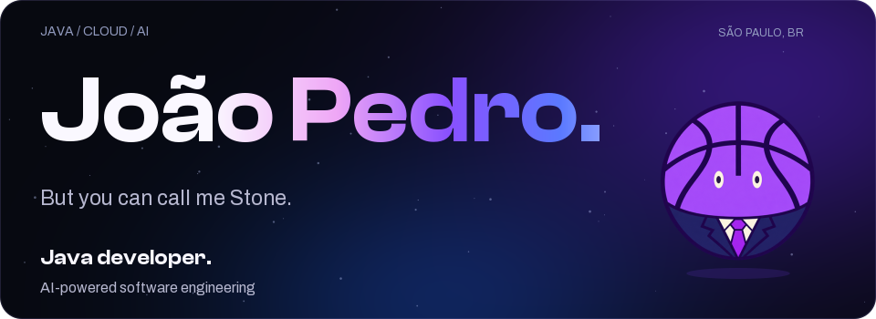
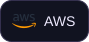
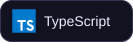
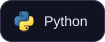
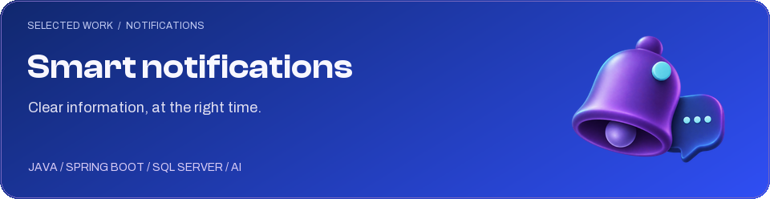
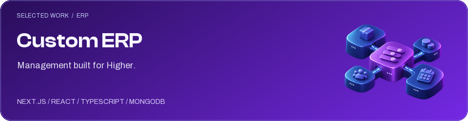
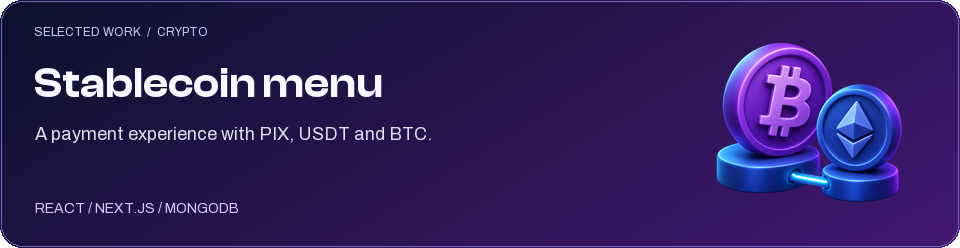
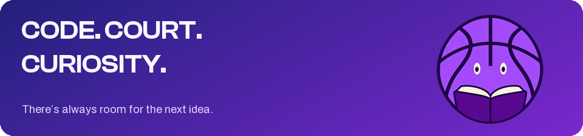

STONE / GITHUB PROFILE · PRÉVIA LOCAL
Português



Ideas take shape. Code makes it happen.
I’m João Pedro, but you can call me Stone. I study Computer Science and build applications with Java, Spring Boot and AWS, connecting software, people and ideas.
I work on full stack development in financial and blockchain ecosystems. I care about well-designed APIs, reliable integrations and exploring how AI can help turn an idea into software.
Away from the keyboard, I’m a basketball athlete. The purple mascot brings a little of that story into my work.
Tools I build with






Also in my toolkit: JavaScript, SQL, MongoDB, REST APIs and AI-assisted development.
From concept to experience

Source code · Explore project

Explore project

Explore project
Explore all projects in my portfolio →
Always building. Always learning.
Going deeper into Java, cloud and AI applied to software. I also share what I learn and the people I meet in the tech community.

Instagram ·
LinkedIn ·
Let’s talk